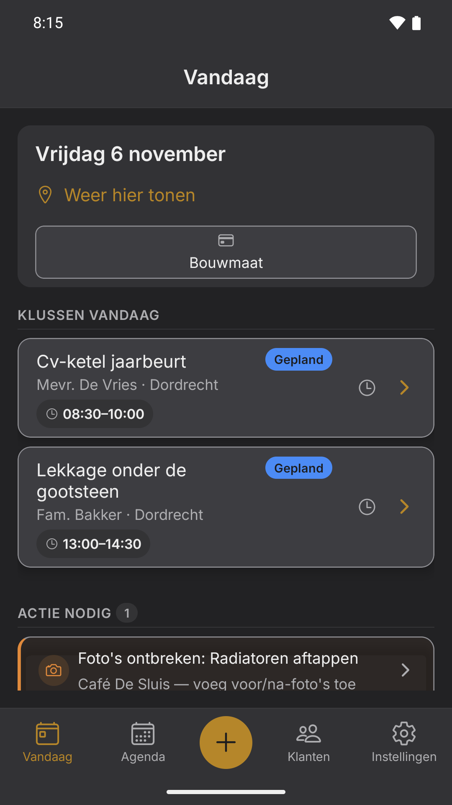
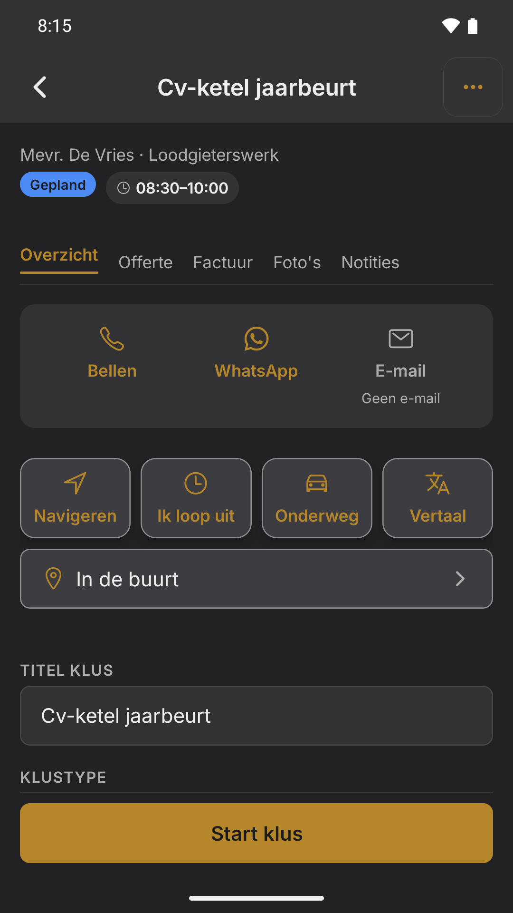
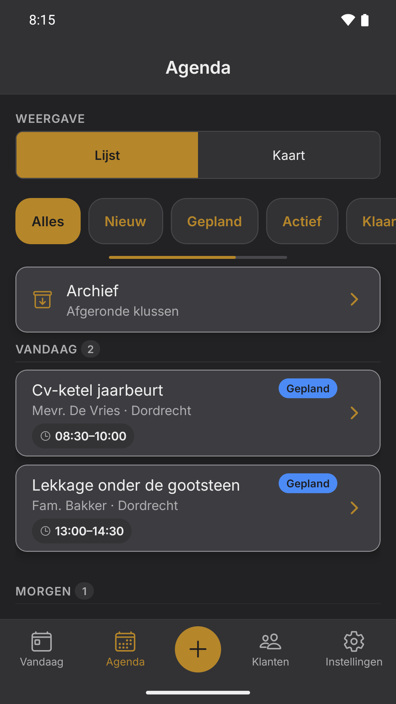
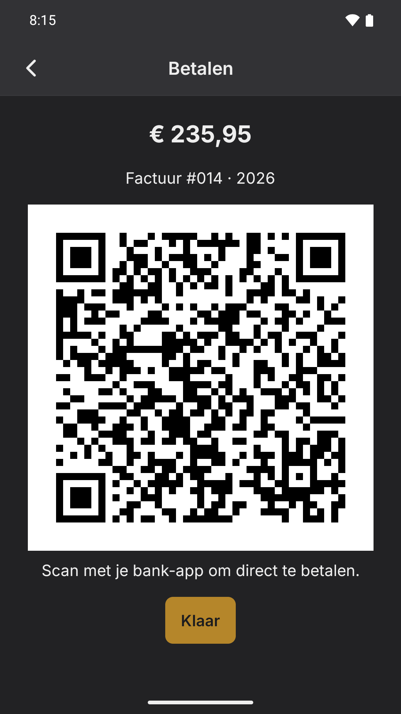

Voor de vakman met een eigen zaak in België en Nederland
Planning, offertes, facturen, foto's en getekende werkbonnen in één app. Alles staat op je telefoon, dus in de kelder of de kruipruimte werkt FABE gewoon door en synchroniseert zodra je weer bereik hebt.

De app
Schermafdrukken uit FABE zelf, met verzonnen klanten.



Voor welk vak
Eén app voor het werk dat op een werf gebeurt. De klus, de foto's, de werkbon en de factuur zijn overal hetzelfde. Alleen de woorden op je offerte verschillen, en die zet je zelf klaar in je eigen sjablonen.
Waarom FABE
Gebouwd voor de vakman die zijn eigen zaak runt: klussen, offertes, facturen, materialen en uren op één telefoon, en het blijft werken zonder bereik op de werf. De meeste software is gebouwd voor teams met een planner achter een bureau. FABE heeft grote knoppen, één duidelijke actie per scherm, en onderbreekt je op het juiste moment in plaats van 's avonds aan de keukentafel.
Volledig offline te gebruiken. Geen bereik in de kelder? Alles werkt gewoon door en synchroniseert vanzelf zodra je weer boven bent.
Voor- en na-foto's met tijdstempel, een getekende werkbon en meerwerk vastgelegd op het moment zelf: bij de klant, niet uit het geheugen.
Agenda en weekkaart, een seintje als twee klussen te krap na elkaar staan, en "Ik ben onderweg" of "Ik loop uit" in één tik, in de taal van de klant.
Offerte in minuten, factuur uit de klus zelf, en een QR-code waarmee de klant direct vanaf de factuur betaalt. Kent btw-verlegging.
Telefoon kapot of gestolen? Met een gratis account staat je hele administratie versleuteld in een Europese cloud en zet je alles terug op een nieuw toestel.
Nederlands, Frans en Engels. Offertes, facturen en berichten gaan automatisch in de taal die je per klant instelt.
Kosten en btw
Foto van de bon op de klus, FABE leest bedrag en btw. Elke kost staat bij de juiste klus én in je kwartaaloverzicht: btw op je facturen min btw op je kosten, dus je weet voor de aangifte wat je betaalt of terugkrijgt. Ook voor verzekering, telefoon en andere kosten zonder bon.
Zo werkt het
Klant en klus aanmaken kost seconden. FABE zoekt het adres erbij, plant de rit en waarschuwt wanneer je moet vertrekken.
Foto's vóór en na, meerwerk direct genoteerd, werkbon ter plekke getekend. Alles hangt aan de klus, niets raakt kwijt.
De factuur staat al voor je klaar op basis van wat je vastlegde. Versturen, klaar. Te laat betaald? FABE houdt het bij en zet de herinnering klaar.
Prijs
Of per jaar: € 206,53 excl. btw (€ 249,90 incl.), € 49,98 minder dan 12 × € 24,99.
Vast bedrag. Geen prijs per gebruiker, geen limiet op klussen of facturen.
Start gratis in de bètaEen eenvoudige factuurtool kan goedkoper zijn, maar die staat niet op de werf: geen foto's bij de klus, geen getekende werkbon, geen offline.
Tijdens de bèta betaal je niets en zijn er geen betaalgegevens nodig.
Veelgestelde vragen
Ja, volledig. FABE is lokaal-eerst gebouwd: alles staat op je eigen telefoon en de app heeft geen verbinding nodig om te werken. Zodra er weer bereik is, synchroniseert alles vanzelf naar je beveiligde cloudback-up.
Van jou. Je administratie staat op je eigen toestel en, met een account, versleuteld op servers in de EU (Frankfurt). Wij verkopen geen gegevens, tonen geen advertenties en gebruiken geen tracking. Stap je eruit, dan neem je alles mee via de export.
Met het maandplan wel: je zegt per maand op, zonder opzegtermijn-trucs. Het jaarplan loopt per jaar. En tijdens de bèta betaal je helemaal niets.
FABE start op Android; een iPhone-versie staat op de planning. Laat via info@getfabe.com weten dat je interesse hebt. Dat bepaalt mee hoe snel hij er komt.
Ja. FABE is voor de Benelux gebouwd, niet vertaald uit het Engels: btw-tarieven, btw-verlegging en documenten in het Nederlands en Frans zitten erin.
FABE kost € 20,65 per maand exclusief btw (€ 24,99 inclusief btw), of € 206,53 per jaar exclusief btw (€ 249,90 inclusief btw, € 49,98 minder dan 12 × € 24,99), alles inbegrepen, zonder prijs per gebruiker en zonder limiet op klussen of facturen. Een eenvoudige factuurtool kan goedkoper zijn, maar die staat niet op de werf: geen foto's bij de klus, geen getekende werkbon, geen offline.
Nee, en dat is met opzet. FABE maakt je offertes en facturen op de werf en houdt de wettelijk doorlopende nummering bij; je boekhouder of boekhoudpakket doet de rest. Je haalt alles eruit via UBL (het e-factuurformaat dat de meeste pakketten inlezen) en via een CSV-export.
Ja. Er is geen prijs per gebruiker: één abonnement van € 20,65 per maand excl. btw dekt je zaak. Wel een eerlijke beperking voor nu: gebruik voorlopig één account per toestel. Twee toestellen die tegelijk dezelfde klus bewerken, gaat goed, maar de laatste die synchroniseert wint. De app zegt dat dan ook met zoveel woorden, in plaats van het stil te laten gebeuren.
FABE is voor beide landen gebouwd: doorlopende factuurnummering per jaar, de btw-tarieven van NL en BE, btw-verlegging voor werk in onroerend goed, en UBL-bestanden (Peppol BIS 3.0) die je boekhouder of je boekhoudpakket inleest. Let op voor België: sinds 1 januari 2026 moet een factuur tussen twee Belgische btw-plichtige ondernemingen rechtstreeks via het Peppol-netwerk verstuurd worden. FABE maakt het bestand; het verzenden over Peppol zelf zit er nog niet in. Dat loopt voorlopig via je boekhouder of je Peppol-dienstverlener. De verantwoordelijkheid voor je aangifte blijft bij jou en je boekhouder: FABE is een hulpmiddel, geen fiscaal advies.
De bèta loopt
Een handvol vakmensen test FABE nu op echte werven. Doe mee, betaal niets, en bepaal mee hoe de app wordt.